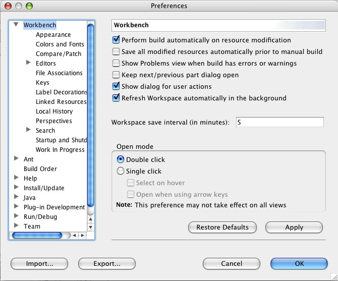
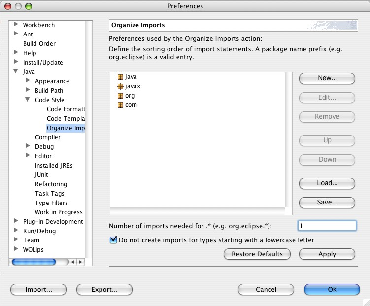

Eclipse set up
Workbench menu: Windows > Preferences
|
|
Workbench
- Refresh workspace automatically in the background - When this option is checked Eclipse
recognices changes made by external tools like WOBuilder, EOModeler and ant.
|
 |
Java Organize Imports
- Number of imports needed for * - When this option is set to 1 Eclipse
organizes your imports compatible with WOBuilder. Setting the option
does not change existing import statements. You can invoke an "Organize Imports" from
the context menu of the source folder.
|
 |